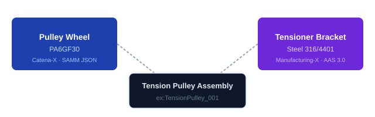

How PMDCO (PMD Core Ontology) bridges incompatible industrial schemas across Catena-X and Manufacturing-X.

See the demo ↓Catena-X and Manufacturing-X each expose material data through their own schemas — SAMM (Semantic Aspect Meta Model) aspect models for polymer properties, AAS (Asset Administration Shell) 3.0 inspection documents for steel certifications. A conventional integration requires a bespoke adapter for every pair of schemas.
The PMD approach is different: each dataspace's data is converted once into PMDCO (PMD Core Ontology)-conformant RDF, loaded into a shared triplestore, and from that point forward is queryable together using SPARQL — regardless of the original format.
The Tension Pulley Assembly demonstrates this: one physical part, two components sourced from incompatible dataspaces, unified by a single cross-dataspace SPARQL query.
CatX ──adapter──► MfgX CatX ──adapter──► Lab CatX ──adapter──► … MfgX ──adapter──► ERP … N schemas × M targets = N×M adapters
CatX ──► PMDCO ◄── MfgX
▲ ▲
Lab ERP
one shared layer
N queries possible
0 additional adapters
Run each node individually — inspect the data it handles, then mark it complete. The knowledge graph inspector updates live.
In-browser Oxigraph WASM triplestore — triple counts update as each node loads data.
Run a node to see live data.
Run the Cross-Dataspace Query node above to populate this table. Load at least the Catena-X or Manufacturing-X source first for results to appear.
| Component | Material | Property | Value | Unit |
|---|---|---|---|---|
| Pulley Wheel | PA6GF30 | elastic modulus | 9800 | MegaPA |
| Pulley Wheel | PA6GF30 | impact strength | 74000 | J/m² |
| Pulley Wheel | PA6GF30 | melting point | 223 | DEG_C |
| Pulley Wheel | PA6GF30 | tensile strength | 140 | MegaPA |
| Tensioner Bracket | Steel 316/4401 | elongation at fracture | 60 | PERCENT |
| Tensioner Bracket | Steel 316/4401 | tensile strength | 632 | MegaPA |
| Tensioner Bracket | Steel 316/4401 | yield strength | 276 | MegaPA |